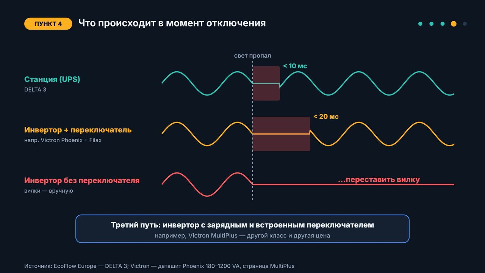

Зарядна станція чи власний комплект: що вигідніше
У випуску 1 ми порахували комплект: акумулятор LiFePO4 на 100 А·год, інвертор на 1000 Вт, зарядний пристрій і запобіжник. Поруч у магазині стоїть готова зарядна станція. Порівнюємо за п'ятьма пунктами й виводимо просте правило вибору.
Ролик російською, 5:14. Не відкривається? Дивитися на YouTube або читайте розбір нижче — у ньому все те саме.
Впишіть ціни свого магазину — калькулятор порівняє ціну за ват-годину й час заряджання.
Відкрити калькуляторЩо всередині станції
Той самий набір, що й у комплекті: акумулятор LiFePO4, інвертор, зарядний пристрій і електроніка, яка всім керує. Тільки все зібрано в одному корпусі. Для прикладу — EcoFlow DELTA 3: 1024 Вт·год, вихід 1800 Вт, вага близько 12,5 кг. Комплект з випуску 1 — 1280 Вт·год та інвертор на 1000 Вт. За ємністю вони близькі.

1Ціна за ват-годину
Ціни змінюються щотижня і в кожній країні свої, тому замість цифр — спосіб. Порівнюйте не ціну коробки, а ціну однієї ват-години.
У станції ємність у ват-годинах написано в паспорті. В акумулятора часто пишуть ампер-години — помножте їх на напругу: 100 А·год × 12,8 В = 1280 Вт·год. Для комплекту складайте все: акумулятор, інвертор, зарядний пристрій, запобіжник, дроти й клеми — і діліть на ємність акумулятора. На невеликій ємності різниця зазвичай невелика: і там, і там ви платите за інвертор і зарядний пристрій.
2Розширення
Станцію розширюють фірмовою додатковою батареєю; для DELTA 3 це ще 1024 Вт·год — окремий блок у своєму корпусі. До комплекту додають другий такий самий акумулятор: інвертор і зарядний пристрій уже є, платите тільки за акумулятор. Тому кожна наступна кіловат-година в комплекті зазвичай дешевша. З'єднуйте тільки однакові акумулятори і так, як дозволяє інструкція виробника.

3Швидкість заряджання
Якщо світло вимикають за графіком, важливо, чи встигне система зарядитися, поки світло є. DELTA 3 бере з розетки до 1500 Вт і заряджається до 100 % за 56 хвилин. Зарядний пристрій на 20 А заряджає акумулятор на 100 А·год приблизно за 5 годин, два такі акумулятори — близько 10 годин.
Можна поставити потужніший зарядний пристрій: акумулятор LiTime на 100 А·год допускає струм заряду до 100 А, хоча виробник рекомендує 20 А.

4Перемикання при відключенні
Станція працює як джерело безперебійного живлення: у DELTA 3 заявлено перемикання швидше за 10 мс. Звичайний інвертор сам не перемикається: наприклад, до Victron Phoenix виробник пропонує окремий автоматичний перемикач Filax (швидше за 20 мс). Без нього вилки доведеться переставляти вручну. Третій шлях — інвертор із зарядним і вбудованим перемикачем, як Victron MultiPlus, але це інший клас пристроїв та інша ціна.

5Гарантія й ремонт
На DELTA 3 виробник дає 5 років гарантії; усе зібрано й захищено, помилитися під час збирання неможливо. Але після гарантії поломка інвертора всередині — це сервіс або заміна станції повністю. У комплекті в кожної частини своя гарантія: зламався інвертор — міняєте тільки його. Зате збирання — на вас.
Правило вибору
| Зарядна станція | Власний комплект | |
|---|---|---|
| Коли брати | до 1–2 кВт·год, світло дають ненадовго, хочеться без дротів | потрібна велика ємність, відключення довгі, є час на збирання |
| Сильна сторона | заряджається приблизно за годину, перемикається сама | наступна кВт·год зазвичай дешевша, деталі міняються по одній |
Джерела
- EcoFlow Europe — DELTA 3: 1024 Вт·год, 1800 Вт, ≤ 12,5 кг, заряд від мережі 1500 Вт за 56 хв, UPS < 10 мс, гарантія 5 років.
- EcoFlow Europe — додаткова батарея DELTA 3: +1024 Вт·год.
- LiTime — акумулятор 12 В 100 А·год: 1280 Вт·год, струм заряду до 100 А, рекомендовано 20 А.
- Victron Energy — даташит Phoenix 180–1200 VA: окремий перемикач Filax, < 20 мс.
- Victron Energy — MultiPlus: вбудований перемикач і функція UPS.
Перевірено 14 листопада 2026 р. Знайшли помилку — напишіть у коментарях під роликом.